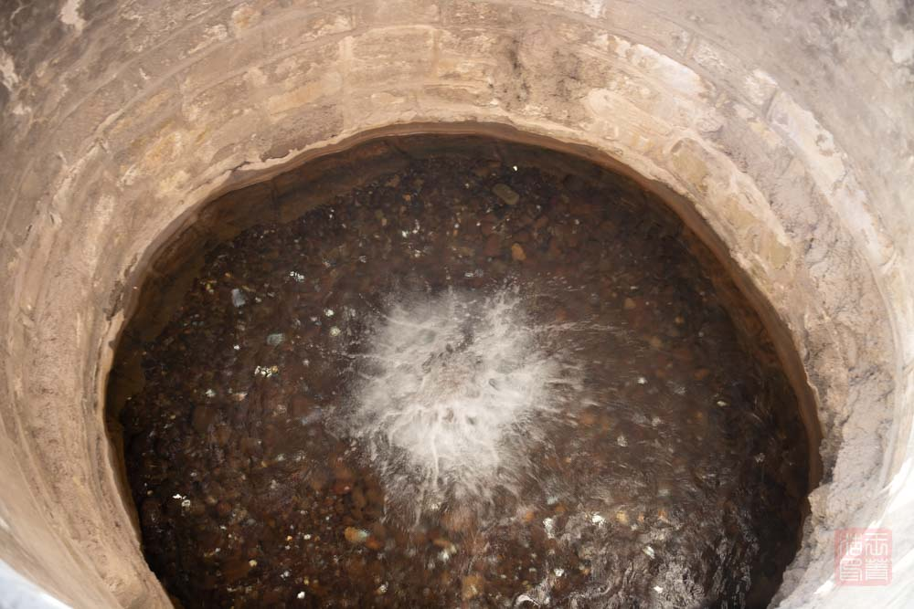
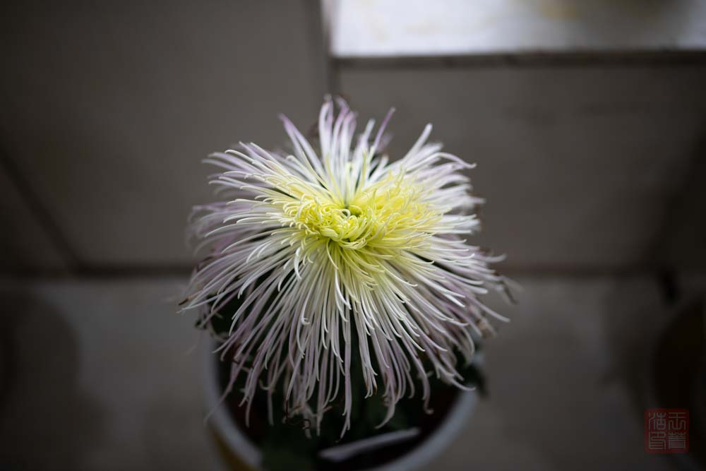
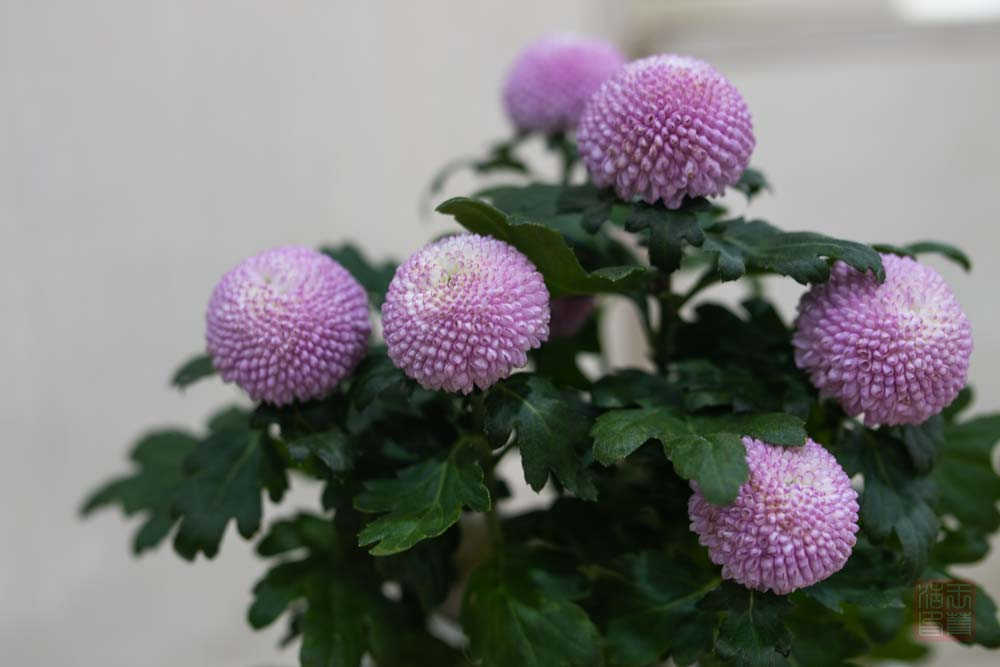
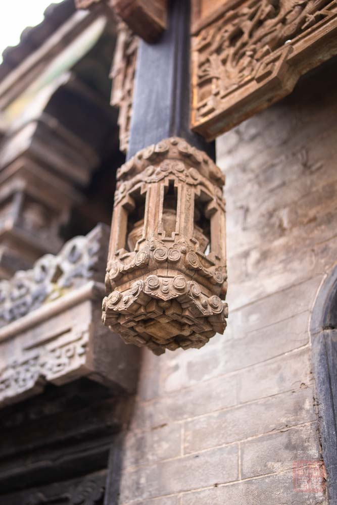

2020年10月山西自驾游
由于疫情，今年没有去太远的地方，为了打个时间差，10月5日出发，10日返回
1. 相关行程
-
时间： 2020-10-05 ~ 2020-10-9 共5天
-
交通： 自驾
2. 旅游经历
2.1. 10月5日 太原-晋祠
从家出发，一路到山西省太原市，早上五六点出发，中午到达太原市晋源区，先入住酒店，在晋阳湖附近。
由于不知道景区停车场情况，下午直接打车去了 晋祠。 路上听司机师傅说住的这附近景点很多，要去的晋祠很多古建筑，等等。
| 晋祠分为外面的晋祠公园和靠里面的晋祠博物馆，晋祠公园免费，晋祠博物馆工作日免费，节假日收费。国庆期间只能买票进去了。 |

晋祠给人印象最深的是古朴的建筑，面积不算大，但是内容相当丰富。 转完后时间也比较晚了，回酒店休息。
2.2. 10月6日 太原
以前没来过太原，今天准备再待一天，但是计划有些失误。
上去去了酒店附近的 晋阳湖，面积特别大，听当地人说这是以前的鱼塘连起来的，不知道是去的太早还是怎么回事儿，人很少。景区内整理的很干净，但是相应的设施好像还在建设中，有些空荡荡的感觉。湖南面有个观景台，能看湖面的景色和不太远的鸟岛，可能是季节原因，只能看到几只野鸭捕鱼。
由于晋阳湖面积太大，只在湖南边转了一会儿。准备去附近的古城，结果古城暂停营业；又说去新开的植物园，结果发现植物园的票在国庆前就已经被预定光了。然后直接去的森林公园。森林公园的面积不小，地势有些起伏。很多人在里面休闲、锻炼。公园里面有个高尔夫球场，占地面积也不小，被公园的路包围着。转了一圈后准备去附近的汾河观景平台，结果发现也正在修。
公园很小，但是特别热闹，也很有公园的氛围。这个公园很有历史了，曾用过人民公园的名称，可见它的重要。公园很漂亮，比今天去的其他地方好上太多。正好赶上公园的菊花展，看了一些各式各样的菊花。


2.3. 10月7日 临汾-壶口瀑布
这是这次旅行最不虚此行的一天，我们去了 壶口瀑布。早上一大早就出发，中午才到了山西壶口瀑布。
| 壶口瀑布的两岸分别处在山西景区和陕西景区。壶口瀑布是个不垂直于河岸的斜面，山西景区看到的面更大，更壮观一些。 |
正好最近涨水，水量特别大，来的很是时候。有两座去和中心看瀑布的桥，据管理人员说，昨天的河水已经淹没了其中一座。
由于水太大，景区关闭了位置比较靠下的平台，看不到黄河之水天上来的情景了。景区不算大，一小块地方，但是景色很震撼，值得一去。 壶口瀑布离其他景点太远，这天只安排了一个地方。晚上到临汾市区休息。住的临汾市区的老城区，真得吐槽一下那里的交通，太乱了。
2.4. 10月8日 晋中-平遥古城
这天去的平遥古城，一大早出发，10点多到的平遥，先在古城门口附近入住了酒店，把车停在了那里。步行进了景区
由于假期最后一天，人相对来说少了一些，面积不小。各处景点的转，去了城墙，文庙，日升昌等景点。买了些东西，地方太大，转到晚上天黑才到酒店休息。
2.5. 10月9日 晋中-乔家大院 常家大院
这是出行计划的最后一天，去了乔家大院和常家庄园。由于已经是工作日了，都是免门票入园。
这里离着平遥古城比较近了，早上就到了。
广场很大，得走了一会儿。入口直接点昨天预定的票，免费进去了。 大院里面院子太多了。一间挨一间的转，这里的院子风格比较统一。来这里看建筑，看历史。

里面的 垂花柱 格式各样，很漂亮。
这里转了一上午，学到了很多这里的风俗习惯，了解了很多晋商的历史。不错的经历。
下午去了常家庄园，跟着导航各种大路小路的走，感觉地点有点偏……
整个景区都特别古朴，看着就像是几十年没修过似的，很有古镇的感觉。常家庄园一进门口就是常家祠堂，古朴的院子和建筑让人有种穿越的感觉。 不知道是不是假期结束的原因，人特别少，甚至到了四五点后，很少能见到游客，是个拍照的好地方。
虽然是雕梁画栋，但是漆面大部分已经剥落。
傍晚到晋中市区的酒店休息，结束一天的行程。
2.6. 10月10日
收拾东西回家，结束这次旅程。
3. 结语
这次旅行总体上来说还算很不错的，学习参观了山西的各种文化，包括建筑、自然风光、晋商发展等。这次虽然没遵循以前每到一个地方先逛当地博物馆的习惯，但是还是从游览中体会到了很多书本上读不到的。
这次最值得去的是参观了壶口瀑布，并且幸运的赶上了合适的时间和极好的天气，领略到了黄河的气势磅礴。其实来壶口瀑布之前还是比较犹豫的，毕竟离其他计划的地方太远了，要花一天的时间看一个景点。不过结果很超乎想象，这一天时间很值。
![]()